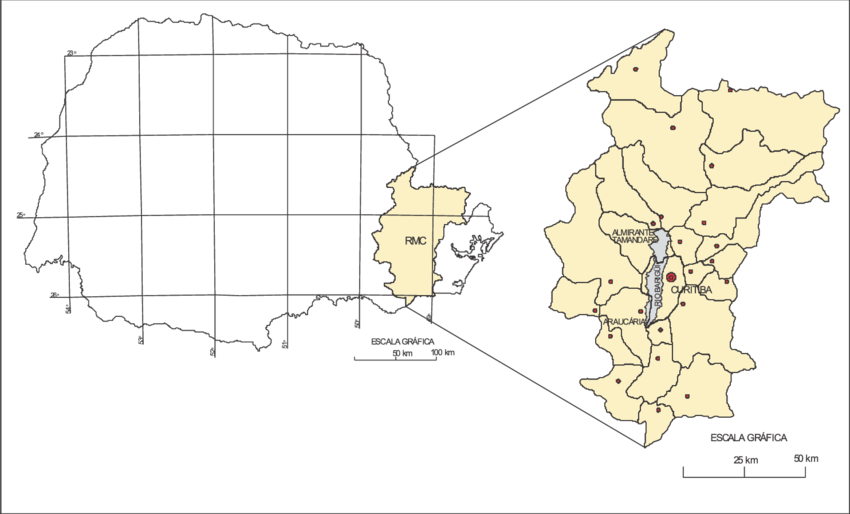

A Bacia do Rio Barigui tem uma área de 264,84 km2, atravessa três municípios: Almirante Tamandaré, Curitiba e Araucária. As nascentes do rio Barigui, principal curso de água superficial da bacia hidrográfica, está situada ao norte do município de Almirante Tamandaré e suas águas correm em direção ao sul cruzando a cidade de Curitiba no sentido longitudinal até a região sudeste do município de Araucária, onde se localiza a foz do rio Barigui desembocando no rio Iguaçu. (BRISKI, et. al. s/d). A figura 1, mostra a localização da Bacia do Rio Barigui no Estado do Paraná.
FIGURA 1: LOCALIZAÇÃO DA BACIA DO RIO BARIGUI NO ESTADO DO PARANÁ.
FONTE: FILL, Heinz Dieter et al. Balanço hídrico da Bacia do Rio Barigui, PR (2005).
Essa bacia hidrográfica apresenta forma alongada e estreita cuja largura varia entre 4 km e 9 km e o padrão de drenagem predominante é dendrítico (CURITIBA, 2010).
No trecho em que atravessa o município de Curitiba, encontra-se 80% dos seus afluentes de maior relevância entre eles os rios Campo de Santana, Arroio do Pulo, Arroio da Ordem, Arroio do Andrade, Arroio do Pulador, Rio Vila Formosa, Ribeirão Campo Comprido, Córrego Vista Alegre, Rio do Wolf, Ribeirão Antônio Rosa, além de seus subafluentes dos quais se destacam também: Ribeirão do Passo do França, Córrego Capão Raso, Rio Mossunguê, Rio Uvu e Córrego Vila Isabel, sendo esses na sua maioria já retificados e desviados de seus cursos originais (BRISKI, et. al. s/d).
Suas águas percorrem 18 bairros na capital paranaense, a saber: Taboão, São João, Pilarzinho, Cascatinha, Vista Alegre, Mercês, Santo Inácio, Bigorrilho, Mossunguê, Campina do Siqueira, Seminário, Campo Comprido, Santa Quitéria, Fazendinha, CIC, Tatuquara, Campo de Santana e Caximba (CURITIBA, 2020).
E passam pelo Parque Barigui que leva seu nome. A história desse parque está vinculada ao Plano Diretor de 1965, elaborado pela equipe técnica do Instituto de Pesquisa e Planejamento Urbano de Curitiba (IPPUC), que propunha a criação de grandes parques lineares em lugares estratégicos, como forma de regular as cheias e, por consequência, evitar enchentes (CURITIBA, 2020).
Os parques Tanguá, Tingui, Cambuí, Guairacá, Mané Garrincha, Mairi e Yberê também localizam-se nas margens do Rio Barigui, bem como o Refúgio de Vida Silvestre Reserva do Búgio, ao sul, na sua foz no Rio Iguaçu. A reserva é um mosaico de três Unidades de Conservação de categoria Refúgio de Vida Silvestre (SNUC) localizadas nos municípios de Araucária, Curitiba e Fazenda Rio Grande, na Região Metropolitana de Curitiba. (BREMBATTI, 2013).
Em relação à morfologia, na primeira parcela em uma faixa de aproximadamente 25 km de extensão por 3 km de largura, verifica-se um trecho com características topográficas relativamente acidentada, com declividades acima de 12%, sujeita à erosão e desmoronamentos. Na segunda parcela, após à Conectora 3, observa-se um perfil bem mais plano, constituído por um solo hidromórfico, propício à inundação (CURITIBA, 2010).
Quanto a questão hidrológica, conforme a sua periodicidade, as faixas sujeitas à inundação ou enxurrada do rio Barigui, de acordo com os trechos, podem variar: a) da nascente até o Parque Barigui: O rio apresenta um gradiente acentuado, com canal de escoamento rápido, sendo, no entanto, sujeito a enxurradas, em virtude da reduzida extensão lateral, nas épocas de precipitações elevadas, em geral no verão, e nas mudanças de estação primavera-verão, verão-outono. A faixa considerada de risco, sujeita a enxurradas, varia de 4m a 80m de largura, principalmente na sua margem direita, de montante à jusante. b) do Parque Barigui à Conectora 3: O rio apresenta-se retificado e suas margens possuem solos bem drenados, não obstante há riscos de inundações em virtude das cheias mais elevadas, como as grandes enchentes irregulares, não anuais. A faixa de risco, sujeita a enxurradas, fica em torno de 100m largura. c) da Conectora 3 à sua Foz: As margens do rio, mais rebaixadas, são regularmente ocupadas pelas cheias, ao menos uma vez ao ano. Nessa faixa, que varia de 100 m a 1 km de largura, há material orgânico, caracterizando-se como uma área insalubre, por seu alto teor de umidade, estando diretamente relacionado ao comportamento do rio. Esta área deve ser tida como de equilíbrio ecológico natural, bastante suscetível ao processo de degradação pela ação antrópica (CURITIBA, 2010).
Conforme a Resolução SURHEMA 20/92, artigo 5º, as águas do Rio Barigui são classificadas como: Classe 2 à montante do Parque Barigui e Classe 3 à jusante do Parque Barigui. Segundo a Resolução CONAMA 357/05 os rios classe 2 podem ter suas águas destinadas: a) ao abastecimento para consumo humano, após devidas etapas de tratamento convencional; b) à proteção das comunidades aquáticas; c) à recreação de contato primário, a saber: natação, esqui aquático e mergulho; d) à irrigação de hortaliças, plantas frutíferas e de parques, jardins, campos de esporte e lazer, com os quais o público possa vir a ter contato direto; e e) à aquicultura e à atividade de pesca. Os de classe 3, possuem usos mais restritos, sendo suas águas destinadas: a) ao abastecimento para consumo humano, após tratamento convencional ou avançado; b) à irrigação de culturas arbóreas, cerealíferas e forrageiras; c) à pesca amadora; d) à recreação de contato secundário; e e) à dessedentação de animais. Destaca-se que o enquadramento do rio não se refere a sua situação atual, mas, sim a uma situação que se pretenda atingir (CURITIBA, 2010).
Quanto a cobertura vegetal, a Bacia do Rio Barigui apresenta cobertura vegetal pouco significativa, observa-se pequenas áreas com vegetação densa principalmente ao norte da Bacia. A vegetação é basicamente de florestas caducifólia, subtropical com Araucária Angustifólia, Bracatinga, Mata Pluvial Tropical-Subtropical e Campos. Ao norte da Bacia, no município de Almirante Tamandaré, há predominância do uso rural do solo (cerca de 16%), com a ocorrência de núcleos urbanos dispersos, estando entre eles a cidade de Almirante Tamandaré. Na região média da Bacia, onde está parte do município de Curitiba, a ocupação urbana é preponderante, com predominância dos usos residencial, comercial e de serviços, o que explica a intensa quantidade de lançamentos de esgoto in natura nesta parte do rio. Já na região pertencente ao município de Araucária, a urbanização é ainda incipiente (FROEHNER; MARTINS, 2008).
A ocupação do solo da bacia do Rio Barigui é diversa, na região norte, em sua montante, há uma área essencialmente rural e de vegetação densa, apresentando pequenos núcleos urbanos mais dispersos. Na região central da bacia a densidade urbana é grande, contando com edificações residenciais uni e multifamiliares, comerciais e de serviço. Na região sul da bacia, mais a jusante, há forte presença de indústrias, pois nela se localiza a Cidade Industrial de Curitiba (CIC), parte da Cidade Industrial de Araucária (CIAr) e a Refinaria da Petrobrás (REPAR). Esse polo industrial atraiu inúmeras ocupações regulares e irregulares, bem como pequenas indústrias e serviços. Os solos desta bacia abarcam inúmeras atividades, como: agricultura, pecuária, extração mineral, e outras atividades industriais diversas (IAP, 2018).
Em toda a porção norte da bacia do Barigui ocorre a extração mineral de calcário, uma atividade socioeconômica de caráter intensivo e de significativa relevância econômica. Essa atividade está estabelecida no entorno das nascentes do rio e ao longo de todo o seu trajeto, no município de Almirante Tamandaré. A região norte da bacia também conta com expressiva atividade agrícola, que ocorre com o uso intenso de insumos e defensivos. A rodovia PR 002 liga os municípios de Almirante Tamandaré e Curitiba, e o seu traçado, na sua totalidade, acompanha o percurso do rio Barigui naquele município (AUER, 2010).
Ao longo dessa rodovia há vários estabelecimentos comerciais e de serviços, e também áreas urbanizadas. Como resultado, o óleo combustível e a borracha dos pneus dos veículos que impregnam a pista, associado aos resíduos de areia, calcário, dentre outros minérios, chegam até a calha do rio Barigui, levados pelas chuvas, associado ao despejo in natura de efluentes domésticos e industriais, pois aqueles estabelecimentos e residências, em sua grande maioria, não apresentam rede de tratamento, pelo simples fato de não contarem uma infraestrutura local (AUER, 2010).
Froehner e Martins (2008), apresentaram os resultados das análises de amostras de sedimentos do rio Barigui em Curitiba, avaliadas quanto à composição granulométrica, teor de carbono orgânico, nitrogênio, fósforo e metais como zinco, chumbo, cromo, níquel e cádmio. As análises da composição dos sedimentos revelaram que existe um aporte de esgotos domésticos evidenciado pelas altas concentrações de fósforo e nitrogênio, sendo ainda que as concentrações de fósforo total e nitrogênio nos sedimentos do Rio Barigui em alguns pontos, especialmente em nas áreas urbanas, estão acima da faixa considerada como um ambiente não poluído. Este cenário confirma a presença de esgotos domésticos não tratados lançados diretamente no corpo hídrico. Os estudos revelaram situações distintas ao longo do Rio. Cenários com alta poluição, fruto do lançamento de esgotos, foram percebidos em áreas em que houve a ocupação desordenada e, mais raros, cenários com pouca poluição e com vegetação nas margens.
As análises ainda mostraram a presença preocupante de metais pesados em alta concentração (zinco, chumbo, cromo e níquel) principalmente em pontos localizados em regiões industriais. Os resultados apontam para um cenário não muito animador em relação ao grau de poluição causada por lançamentos de efluentes domésticos e industriais (FROEHNER; MARTINS, 2008).
No município de Araucária, na porção sul da bacia, está localizada uma das indústrias mais importantes da RMC, a Refinaria Getúlio Vargas – REPAR da Petrobrás. Essa refinaria, no ano de 2000, foi responsável pelo mais grave incidente de contaminação ambiental do país, despejando mais de 4 milhões de litros de óleo cru no arroio Saldanha, afluente do Barigui, atingindo um segmento de mais de seis quilômetros da sua porção final e chegando ao rio Iguaçu (AUER, 2009).
O extrativismo de areia e argila é também uma atividade praticada há décadas, na porção sul da bacia do rio Barigui, representando a forma de explotação desse recurso um grave problema tido como um uso insustentável dos recursos naturais locais (AUER, 2010).
Segundo Auer (2010), a urbanização se faz presente em toda a bacia, no entanto, na porção média do rio Barigui, correspondente ao município de Curitiba, é onde se identifica a área com maior densidade, possuindo elementos significativos e representativos de ocupação desordenada em especial nas faixas ribeirinhas e áreas inundáveis, contando com todos os elementos de insustentabilidade característicos do crescimento urbano no país, citando alguns deles:
1. Destruição de APP e densa ocupação de margens e áreas inundáveis;
2. Lançamento de esgoto in-natura nos cursos d'água, incluindo efluentes domésticos e poluentes industriais;
3. Instituições públicas encarregadas do planejamento e ordenamento territorial urbano com entendimento meramente paisagístico das APP’s;
4. Estabelecimento de medidas paliativas para os problemas estruturais, em um permanente quadro de exceção, como ação para contornar a regra (AUER, 2010, p.62).
As unidades de conservação da bacia do rio Barigui são: Bosque São Cristóvão, Bosque da Fazendinha, Bosque do Trabalhador, Parque dos Tropeiros, Parque Diadema, Parque Barigui, Parque Tanguá, Parque Tingui e APA Municipal do Iguaçu. A área compreendida por essas Unidades de Conservação é de 528,76 ha. Dentre elas destaca-se o Parque Barigui, inaugurado em 1972, compondo uma área de 140 ha (AUER, 2010).
O Parque Barigui, bem como os demais parques da cidade, estão inseridos em uma política municipal de preservação de fundos de vale. O objetivo é evitar o assoreamento e a poluição dos rios através de monitoramento, proteger a mata ciliar e também impedir a ocupação irregular das suas margens, tornando estas áreas abertas à população na forma de parques (CURITIBA, 2021).
Criado com o propósito de garantir a preservação das margens do rio Barigui, foi criado o Parque Tanguá, que conta com uma área de 23,5 ha, assim como o Parque Tingui, localizado ao lado direito do rio Barigui, com 380 mil metros quadrados foi inaugurado em 1994. Nesses parques há lagos artificiais com a dupla função de conter as águas das chuvas e contribuir para a sua própria oxigenação, fundamental para a manutenção da vida aquática do rio. No entanto, sob a óptica do planejamento conservacionista, tais unidades de conservação municipais funcionam como instrumentos isolados, concentrados na porção inferior da bacia, gerando assim insuficientes benefícios à bacia como um todo (AUER, 2010).
Para Oliveira (1996a), o sentido geral da criação dos parques e bosques curitibanos concentrou-se, essencialmente nos três primeiros parques (Iguaçu, Barigüi e São Lourenço), projetados nos anos 70, década de maior incremento nas áreas verdes públicas no município. A função desses parques, quando foram idealizados, uniu de um lado a antiga ideia “de dar água à cidade” do arquiteto do IPPUC dos anos 60, Jaime Lerner, e, de outro, surgia como uma solução técnica encontrada para combater enchentes na cidade surgida quando da grande enchente que vitimou a antiga usina de curtume do São Lourenço no início dos anos 70, quando Lerner já era Prefeito de Curitiba. Vingou então a ideia de dar água à cidade emoldurando essa “água” com áreas verdes, com obras de saneamento e infraestrutura urbana que contivesse ao máximo possível o problema das enchentes.
AUER, A. M. Avaliação dos processos de ocupação antrópica na bacia do rio Barigui e suas implicações ecológicas. Tese (Doutorado em Ciências Florestais), Programa de pós graduação em Engenharia Florestal, Universidade Federal do Paraná, Curitiba, 2010. Disponível em: https://acervodigital.ufpr.br/bitstream/handle/1884/36798/R%20-%20T%20-%20ANA%20MARISE%20AUER.pdf?sequence=3&isAllowed=y Acesso em: 11 jun. 2021.
AUER, A. M. Laudo Pericial Florestal. AÇÃO CIVIL PÚBLICA No. 2001.70.00.000582 da Vara Ambiental Federal de Curitiba. 2009. BREMBATTI, Katia. Nasce o maior refúgio urbano do Brasil. Gazeta do Povo, Curitiba, 27 mar. 2013. Disponível em: https://www.gazetadopovo.com.br/vida-e-cidadania/nasce-o-maior-refugio-urbano-do-brasil-b26wgqq6idfcca7a4eude0jki/ Acesso em: 01 mai. 2021.
BRISKI, S. J.; GÓES, C. T.; JESUS JR., F. S DE E KURTA, J. s/d. Análise qualiquantitativa da Bacia do Rio Barigui para verificação de seu estado hidrológico e ambiental. Disponível em: http://www.geomorfologia.ufv.br/simposio/simposio/trabalhos/trabalhos_completos/eixo3/091.pdf Acesso em: 29 abr. 2021.
CURITIBA. Prefeitura Municipal. Aqui passa o rio Barigui. Curitiba, 2020 Disponível em: https://mid.curitiba.pr.gov.br/2020/00290752.pdf. Acesso em: 24 ago. 2021.
CURITIBA. Prefeitura Municipal. Parque Barigui. Secretaria Municipal de Meio Ambiente - SMMA. Curitiba, 2021. Disponível em: https://www.curitiba.pr.gov.br/conteudo/parque-barigui/292 Acesso em: 05 jun. 2021.
CURITIBA. Prefeitura Municipal. Recursos Hídricos. 2010. Disponível em: http://multimidia.curitiba.pr.gov.br/2010/00085317.pdf. Acesso em: 5 de jun. 2021.
FROEHNER, S., MARTINS, R. F. (2008). Avaliação da composição química de sedimentos do Rio Barigüi na região metropolitana de Curitiba. Quimica Nova, 31(8), 2020-2026.
Instituto Ambiental do Paraná – IAP. (2018). Monitoramento da qualidade das águas dos rios na Bacia do Alto Iguaçu, na Região Metropolitana de Curitiba: no período de 2010 a 2018. Disponível em: http://www.iat.pr.gov.br/sites/agua-terra/arquivos_restritos/files/documento/2021-03/relatorio_alto_iguacu_2010_2018.pdf Acesso em:09 jul. 2021.
Embarque na aventura de percorrer esse rio que é famoso pelo parque que leva o seu nome, o belo Parque Barigui. Acesse o link abaixo e faça um tour virtual por suas águas.
Explore esse percurso atento a todos os detalhes, ouse sentir-se parte dessas águas, e quando terminar o tour leia o texto: Relato de um rio